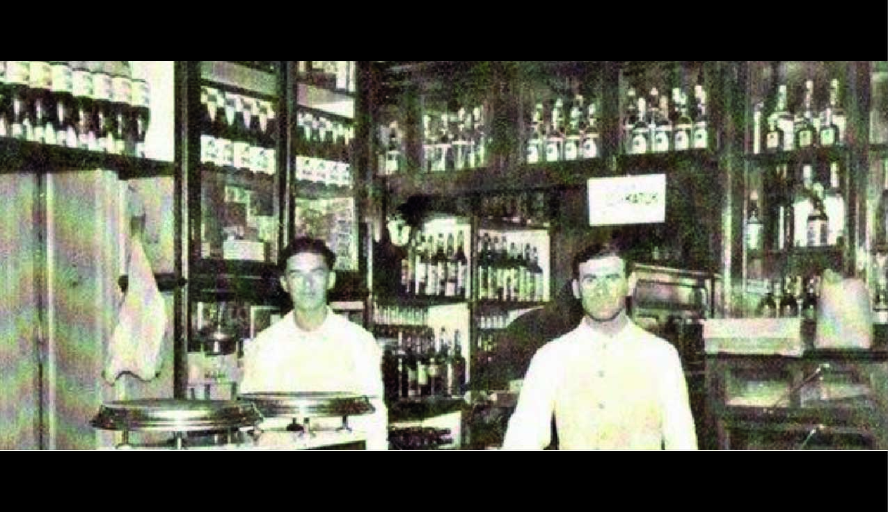
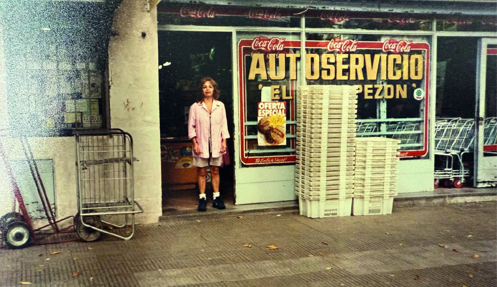
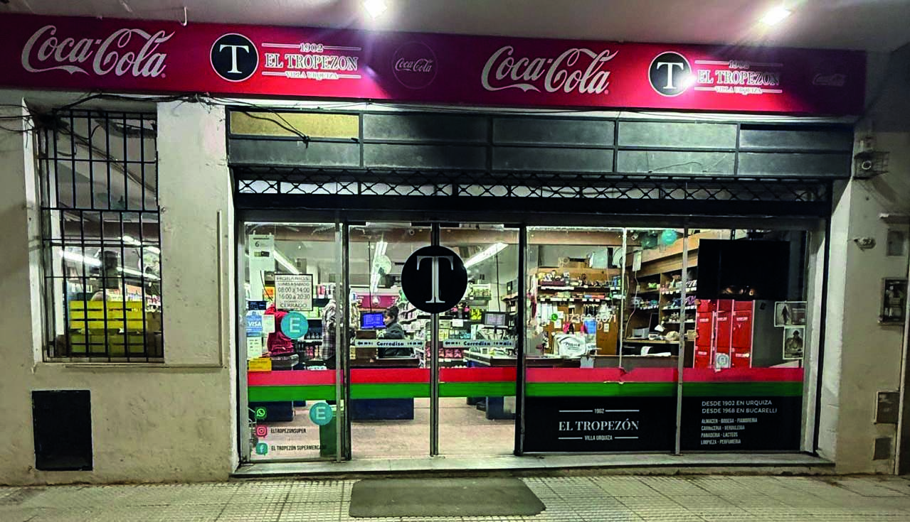

Nuestra historia
🕰️ 1902 — Los Orígenes en la Esquina de Monroe y Bauness
En pleno corazón de Villa Urquiza, nacía en 1902 El Tropezón, un clásico almacén-bar de esquina, atendido con dedicación por Celestino Ramos y Ángel Acal. En aquella época, era habitual ver a los vecinos compartir una copa en la barra mientras otros pasaban por el costado del local a comprar sus víveres en el almacén, al que se accedía tanto por la calle como desde el propio bar. El Tropezón se convirtió rápidamente en un punto de encuentro del barrio, donde se mezclaban las charlas, los pedidos fiados y el olor a café con el bullicio de las compras cotidianas.
🔄 1968 — Una Nueva Etapa en Bucarelli 2150
En 1968, El Tropezón inicia una nueva etapa y se traslada a Bucarelli 2150, dejando atrás su tradicional esquina pero manteniendo intacto el espíritu de barrio. En su nueva ubicación se transforma en un almacén con fiambrería, ampliando su oferta y comenzando un proceso de crecimiento sostenido. Con el paso de los años, se fueron anexando terrenos linderos y sumando nuevos rubros, adaptándose a las necesidades del barrio sin perder la calidez y la atención personalizada que lo hicieron tan querido.
🛒 Actualidad — El Tropezón de Hoy
Hoy, más de 120 años después de sus inicios, El Tropezón sigue siendo parte viva de la historia del barrio. Convertido en supermercado de cercanía, ofrece una amplia variedad de productos y servicios: 🟢 Verdulería 🥩 Carnicería 🍞 Panadería 🧀 Fiambrería 🧼 Limpieza 🍷 Bodega de vinos, entre otros sectores. Todo sin perder esa esencia familiar y el trato de siempre, el que viene de generaciones atrás.